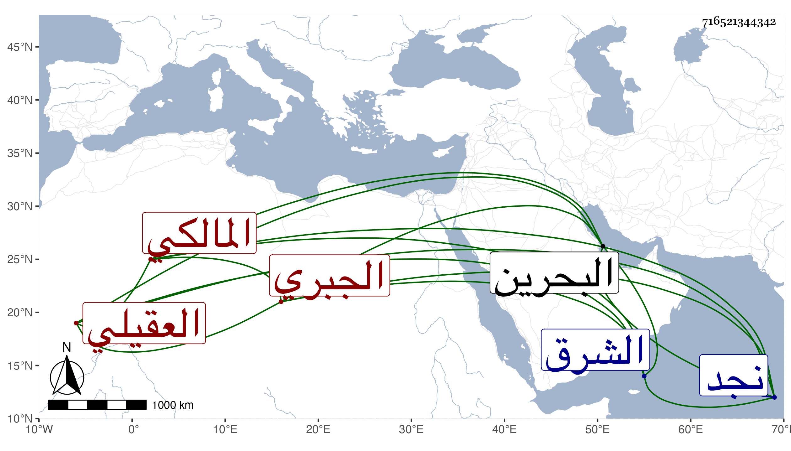

0902Sakhawi.DawLamic.ITO20230111-ara1.EIS1600.716521344342
Biography ID: 716521344342
أجود بن زامل العقيلي الجبري نسبة لجد له اسمه جبر ولذا يقال له ولطائفته بنو جبر النجدي الأصل المالكي مولده ببادية الحسا والقطيف من الشرق في رمضان سنة إحدى وعشرين وثمانمائة وقام أخوه سيف على آخر ولاة الجراونة بقايا القرامطة حين رام قتله وكان الظفر لسيف بحيث قتله وانتزع البلاد المشار إليها وملكها وسار فيها بالعدل فدان له أهلها ولما مات خلفه أخوه هذا بل اتسعت له مملكته بحيث ملك البحرين وعمان ثم قام حتى انتزع مملكة هرموز ابن أخ لصرغل كان استقر فيها بعد موت أبيه وضيق على الابن المشار إليه وصار صرغل يبذل له ما كان يبذله له أخوه أو أزيد وصار رئيس نجد ذا أتباع يزيدون على الوصف مع فروسية تعددت في بدنه جراحات كثيرة بسببها وله إلمام ببعض فروع المالكية واعتناء بتحصيل كتبهم بل استقر في قضائه ببعض أهل السنة منهم بعد أن كانوا شيعة وأقاموا الجمعة والجماعات وأكثر من الحج في أتباع كثيرين يبلغون آلافا مصاحبا للتصدق والبذل وغيرهم . أفاد حاصله السيد السمهودي وبالغ معي في شأنه وهو ممن يكثر البذل له .
